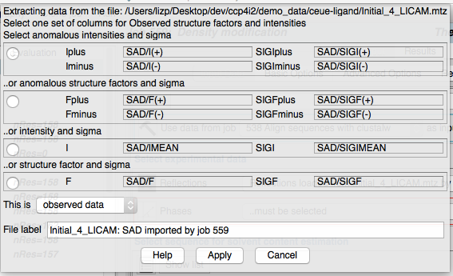
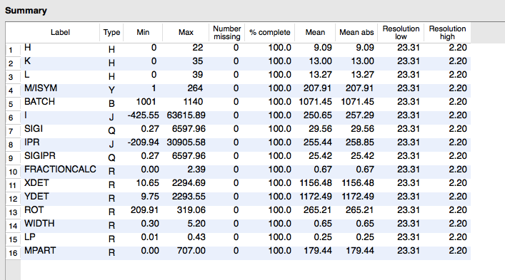

CCP4i2 — Experimental Data Files in CCP4i2¶
Contents
Experimental data files¶
Within CCP4 all experimental data is saved in MTZ format files - these can be regarded as a table with each row representing a reflection and with a variable number of columns for experimentally observed data (intensities and/or structure factures), phases, map coefficients and freeR sets. The file also contains a ‘header’ that holds the spacegroup, cell and other information. See the CCP4 website for details. It is possible for a single MTZ file to contain a mixture of reflection data, phases, map coefficients and freeR sets but within CCP4i2 we use ‘mini’ MTZs containing just one set of one type of data as explained below. The four types of experimental data are described below. There is also a special MTZ format for unmerged data which is described below.
If you have experimental data in any alternative format you must first convert it to MTZ using the tools in the Reflection data tools module. An MTZ file can not be read as text but can be viewed with the ViewHKL program (described here) that is accessible from many places in CCP4i2.
 The ‘reflection’ data is the observed reflection
intensities that come from data collection and have been scaled and
merged by the Data reduction task. Reflections are required input to
all the key structure solution and refinement tasks. Reflections can be
in one of four representations as either intensities or structure
factors and either Freidel pairs (usually called ‘I(+)I(-)’ for
intensities or ‘F(+)F(-)’ for structure factors) or the averaged Imean
or Fmean. The richest form from which all other can be derived is the
intensity Freidel pairs but not all programs work with this.
The ‘reflection’ data is the observed reflection
intensities that come from data collection and have been scaled and
merged by the Data reduction task. Reflections are required input to
all the key structure solution and refinement tasks. Reflections can be
in one of four representations as either intensities or structure
factors and either Freidel pairs (usually called ‘I(+)I(-)’ for
intensities or ‘F(+)F(-)’ for structure factors) or the averaged Imean
or Fmean. The richest form from which all other can be derived is the
intensity Freidel pairs but not all programs work with this.
 The ‘Free R set’ flags a small proportion of the
reflections to be used in generating the ‘Free R’ statisitics in
refinement. A Free R set is usually generated as part of the Data
reduction task or the Generate a Free R set tool (in Data reduction
and analysis module) can be used. The same Free R set should be used
throughout one structure solution and is normally input to Refinement.
The ‘Free R set’ flags a small proportion of the
reflections to be used in generating the ‘Free R’ statisitics in
refinement. A Free R set is usually generated as part of the Data
reduction task or the Generate a Free R set tool (in Data reduction
and analysis module) can be used. The same Free R set should be used
throughout one structure solution and is normally input to Refinement.
 Estimated phases are first generated by refinement after
molecular replacement or by experimental phasing. Some initial estimated
phases are required input to tasks that are trying to improove phases or
model such as Density modification and Autobuild protein and initial
phases can be input to Refinement and they will be output by
Refinement. Phases can be represented as Phis (angles) and FOMs
(figures of merit) or as Hendrickson-Lattmann (HL) coefficients which
are a set of four numbers per reflection. These two forms are
inter-convertible but with some loss of information in the direction HL
to Phi-FOM. We are moving towards always using the richer,
Hendrickson-Lattmann representation but this may not be input or output
by all programs yet.
Estimated phases are first generated by refinement after
molecular replacement or by experimental phasing. Some initial estimated
phases are required input to tasks that are trying to improove phases or
model such as Density modification and Autobuild protein and initial
phases can be input to Refinement and they will be output by
Refinement. Phases can be represented as Phis (angles) and FOMs
(figures of merit) or as Hendrickson-Lattmann (HL) coefficients which
are a set of four numbers per reflection. These two forms are
inter-convertible but with some loss of information in the direction HL
to Phi-FOM. We are moving towards always using the richer,
Hendrickson-Lattmann representation but this may not be input or output
by all programs yet.
 Map coefficients consist of both structure factor and
phase data that are used by graphics programs, Coot or CCP4mg to
generate a map. Usually the map coefficent data has been scaled to
modify the map appearance and so should not be used in any other
context. The Refinement task normally outputs two sets of map
coefficients.
Map coefficients consist of both structure factor and
phase data that are used by graphics programs, Coot or CCP4mg to
generate a map. Usually the map coefficent data has been scaled to
modify the map appearance and so should not be used in any other
context. The Refinement task normally outputs two sets of map
coefficients.
Importing MTZs¶
If you import data from an old-style, ‘monster’ MTZ which contains a variety of data you will be asked to select the required columns in the MTZ file in a window:

In this window all of the data of the required type is listed with the richest form shown first and selected by default. The selected data will be copied to a mini MTZ that is then available for use throughout CCP4i2. The window also has the option to enter the type of data (observed, derived or reference data for reflections) and the label for the data.
mmCIf Files¶
mmCIF is a flexible file format which can contain model coordinates, experimental data or other data. Each element of data in the file is tagged and the generally recognised tags are specified in dictionaries. The format is used by the major structure databases (wwPDB, RCSB PDBe and PDBj) to distribute data and also used by CCP4 for the small molecule ‘library’ that specifies the ideal molecule geometry.
The files can be viewed as text and can be viewed in CCP4i2 using the appropriate tools for the type of data.
 Within CCP4i2 an mmCIF file containing model
coordinates can be read by the coordinate widget the same as the
alternative PDB format. All CCP4i2 tasks will work with either PDB or
MMCIF coordinate files.
Within CCP4i2 an mmCIF file containing model
coordinates can be read by the coordinate widget the same as the
alternative PDB format. All CCP4i2 tasks will work with either PDB or
MMCIF coordinate files.
 An mmCIF file containing experimental data must be
explicitly imported by the Convert merged reflections to MTZ task in
the Reflection data tools module of the task menu.
An mmCIF file containing experimental data must be
explicitly imported by the Convert merged reflections to MTZ task in
the Reflection data tools module of the task menu.
Unmerged reflection data¶
Unmerged MTZ¶
The standard CCP4 file for unmerged data is a spacial case of the MTZ file. It is produced by Mosflm, Dials or other data processing programs from the experimental images and is input to the Data reduction pipeline for conversion into merged MTZ data files. The unmerged MTZ can be viewed in ViewHKL that shows a summary of the columns in the file:

***Discussion on unmerged file content
***Other unmerged formats
Map files¶
 A map file contains a 3D grid of calculated electron
density values usually for just the assymmetric unit (the unique
fraction of the unit cell). They are usually large files and CCP4i2 does
not normally create or keep electron density map files but instead uses
`map coefficient <>`__ files that contain the structure factors and
phases necessary to calculate a map which is calculated as needed in
display (Coot or CCP4mg) or fitting programs. The exceptions are the
Calculate map coefficients task which is a flexible interface for
creating unusual maps which might be viewed in the display programs.
A map file contains a 3D grid of calculated electron
density values usually for just the assymmetric unit (the unique
fraction of the unit cell). They are usually large files and CCP4i2 does
not normally create or keep electron density map files but instead uses
`map coefficient <>`__ files that contain the structure factors and
phases necessary to calculate a map which is calculated as needed in
display (Coot or CCP4mg) or fitting programs. The exceptions are the
Calculate map coefficients task which is a flexible interface for
creating unusual maps which might be viewed in the display programs.
CCP4i2 only deals with the CCP4 map file format (extension .map) and to import electron density maps you should convert structure factors and phases to MTZ format.
Shelx FA files¶
Phaser sol files¶
Appendix: Monster and Mini MTZs¶
Traditionally a single ‘monster’ MTZ file contained many columns with a mixture of types of data. CCP4 programs that output MTZ files carried over all of the data from an input MTZ file to the output MTZ file. In the past, when running programs from scripts, this made handling data files easier but now it has disadvantages: there is a redundancy of data that takes up disk space, it is harder for the CCP4 database to keep track of data and is less flexible for program input. But, most seriously, ‘monster’ MTZs also require more complex user interfaces where the user has to select the appropriate columns from the MTZ file. We are now moving to using ‘mini’ MTZs that put observed data in one file, FreeR flags in another and derived data such as phases and map coefficients in their own files. The user interface is simplified - you just have to select a file and CCP4i2 will deal with the columns.
Most existing CCP4 programs do not yet handle ‘mini’ MTZs but expect one ‘monster’ input MTZ. To cope with this the tasks which use many programs automatically merge mini MTZs before running a program and split the output MTZ afterwards. If you look in Project directory view of the project (on the left-hand side of a project window) you will see listed, for many jobs, the input and output merged MTZ files and log files for the mtzjoin and mtzsplit utilities that perform the conversions.